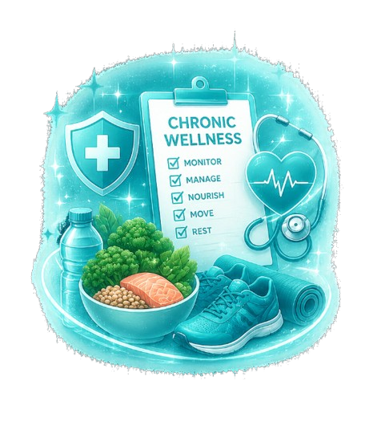
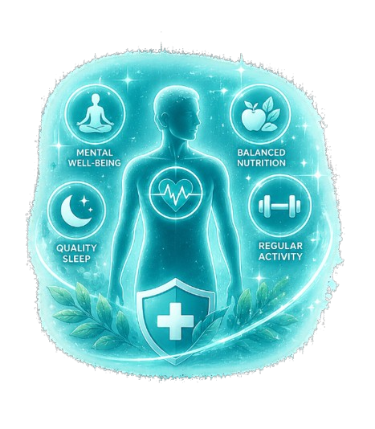

Long-term wellness programs focused on managing chronic conditions, improving quality of life, and promoting healthier everyday living.

Chronic Wellness focuses on helping individuals manage long-term health conditions through preventive care, regular monitoring, personalized lifestyle plans, and continuous medical support.
At Serenity Medical, our wellness programs are designed to improve overall physical and emotional well-being while reducing health risks and enhancing long-term vitality.
Our specialists create individualized wellness plans tailored to your lifestyle, medical history, nutrition, stress levels, and long-term health goals to ensure sustainable wellness improvements.
Our services include:

A complete approach addressing physical, emotional, and lifestyle health.
Early intervention strategies to reduce long-term health risks.
Regular follow-ups and assessments to track your progress.
Long-term lifestyle improvements designed for lasting wellness.
Everything you need to know about chronic wellness and preventive care.
Chronic wellness care focuses on managing long-term health conditions while improving overall lifestyle, wellness, and quality of life.
Anyone managing diabetes, hypertension, obesity, stress, fatigue, or other chronic health concerns can benefit from structured wellness care.
Yes — every program is tailored based on your health condition, lifestyle habits, medical history, and long-term wellness goals.
Follow-up schedules depend on your condition and goals, but regular check-ins help ensure better progress and long-term results.